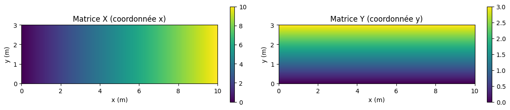
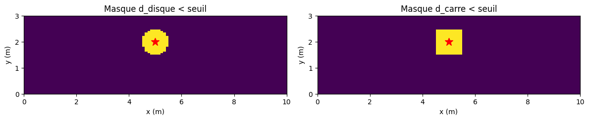

Tutoriel 8#
Construire des matrices 2D avec np.meshgrid#
Objectif : créer et manipuler des matrices 2D représentant des champs physiques (température, altitude, concentration).
Dans un modèle 2D, vous devrez sans cesse initialiser des champs, calculer des distances ou des fonctions de position, et sélectionner des zones particulières. np.meshgrid permet de faire tout cela sans aucune boucle.
1. Construire les matrices X et Y#
Le principe : np.meshgrid(x, y) transforme deux vecteurs de coordonnées 1D en deux matrices X et Y de taille (ny, nx). X[j, i] contient la coordonnée x du point de grille (i, j), et Y[j, i] sa coordonnée y. Autrement dit, X et Y donnent en chaque point ses coordonnées spatiales réelles.
import numpy as np
import matplotlib.pyplot as plt
nx = 100
ny = 50
x = np.linspace(0, 10, nx) # 100 points de x = 0 a 10
y = np.linspace(0, 3, ny) # 50 points de y = 0 a 3
X, Y = np.meshgrid(x, y)
fig, (ax1, ax2) = plt.subplots(1, 2, figsize=(12,2.6))
im1 = ax1.imshow(X, extent=[0,10,0,3], origin='lower', cmap='viridis')
ax1.set_title("Matrice X (coordonnée x)")
ax1.set_xlabel("x (m)")
ax1.set_ylabel("y (m)")
plt.colorbar(im1, ax=ax1)
im2 = ax2.imshow(Y, extent=[0,10,0,3], origin='lower', cmap='viridis')
ax2.set_title("Matrice Y (coordonnée y)")
ax2.set_xlabel("x (m)")
ax2.set_ylabel("y (m)")
plt.colorbar(im2, ax=ax2)
plt.tight_layout()
plt.show()

2. Calculer une fonction 2D, sélectionner une zone#
Avec X et Y, n’importe quelle fonction de \((x,y)\) s’écrit directement. Par exemple la distance à un point central \((x_0, y_0)\) — et il y a deux façons de la mesurer, qui ne donnent pas la même forme :
La première découpe un disque, la seconde un carré. Le carré est plus simple à définir et suffit souvent pour une condition initiale ; le disque est plus réaliste pour une source ponctuelle.
x0 = 5.0 # centre de reference, m
y0 = 2.0
seuil = 0.5 # rayon / demi-cote, m
d_disque = np.sqrt((X-x0)**2 + (Y-y0)**2) # distance euclidienne
d_carre = np.maximum(np.abs(X-x0), np.abs(Y-y0)) # maximum des ecarts
fig, (ax1, ax2) = plt.subplots(1, 2, figsize=(12,2.6))
ax1.imshow(d_disque < seuil, extent=[0,10,0,3], origin='lower', cmap='viridis')
ax1.plot(x0, y0, 'r*', markersize=12)
ax1.set_title("Masque d_disque < seuil")
ax1.set_xlabel("x (m)")
ax1.set_ylabel("y (m)")
ax2.imshow(d_carre < seuil, extent=[0,10,0,3], origin='lower', cmap='viridis')
ax2.plot(x0, y0, 'r*', markersize=12)
ax2.set_title("Masque d_carre < seuil")
ax2.set_xlabel("x (m)")
ax2.set_ylabel("y (m)")
plt.tight_layout()
plt.show()

À expérimenter#
Passez
seuilde 0.5 à 1. Que se passe-t-il ?Remplacez
<par>dans un des masques. Que se passe-t-il ?